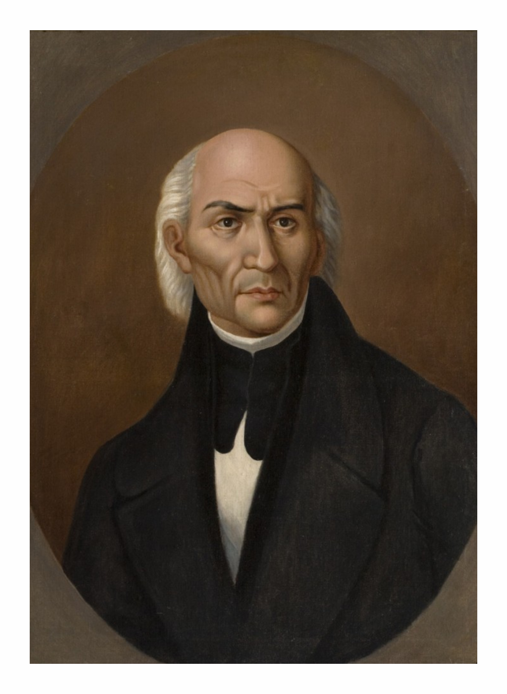
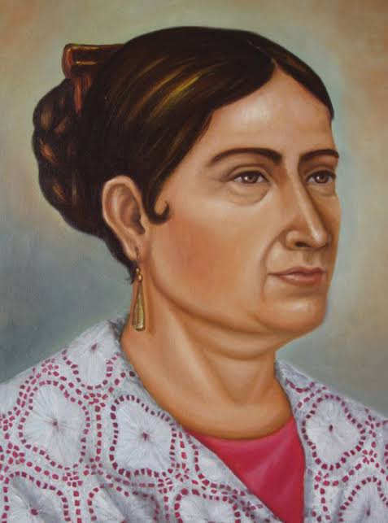
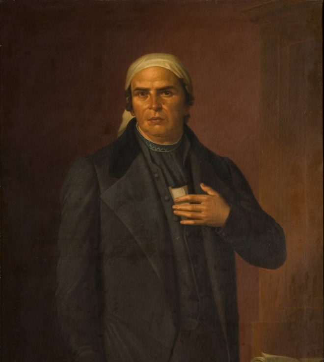
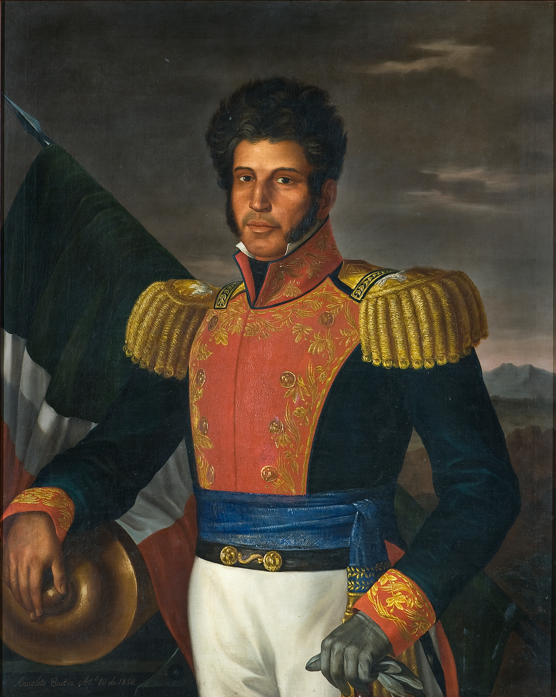

Miguel Hidalgo y Costilla
"El Padre de la Patria"Sacerdote y militar que inició el movimiento independentista aboliendo la esclavitud en sus primeros decretos.

Miguel Hidalgo y Costilla
Josefa Ortiz de DomínguezJosefa Ortiz de Domínguez
"La Corregidora"Pieza clave de la Conspiración de Querétaro; alertó a los insurgentes de que la conspiración había sido descubierta, adelantando el inicio de la lucha.
José María Morelos y Pavón
Líder MilitarLíder militar que tomó el mando tras la muerte de Hidalgo. Autor de Los Sentimientos de la Nación, documento base de la constitución política mexicana.

José María Morelos y Pavón Ignacio Allende
Ignacio Allende
Ignacio Allende
Capitán InsurgenteCapitán del ejército realista que se unió a la causa insurgente, aportando conocimiento táctico y militar a las primeras tropas.
Vicente Guerrero
General InsurgenteGeneral insurgente que mantuvo viva la resistencia en el sur durante los años más difíciles y pactó la paz final con el Abrazo de Acatempan.

Vicente Guerrero